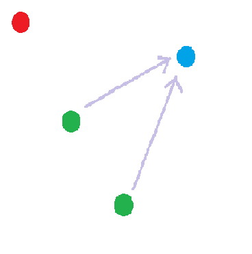
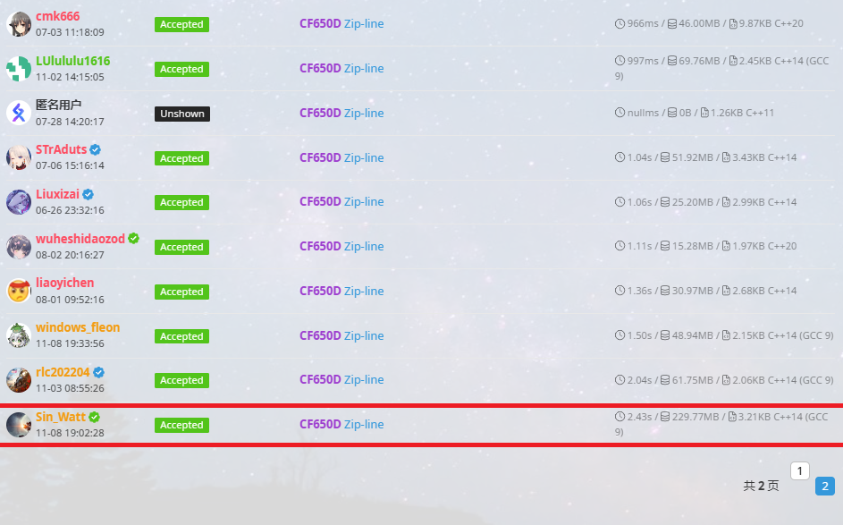

【Zip-line】
题解 CF650D 【Zip-line】
就我一个在线？啊？
通过主席树实现一个在线做法。（因为这个蒟蒻没意识到可以离线）
题意
给出一个序列，每次在原序列基础上替换一个位置上的数后，求 LIS。
思路
记 $f(i)$ 表示以下标为 $i$ 的数结尾的 LIS， $g(i)$ 表示以下标为 $i$ 的数开头的 LIS。所有 $i$ 表示在原序列中的下标（从 $1$ 开始），所有 $j$ 表示是第几个询问，$h_i$ 表示原序列中第 $i$ 个数， $a_j,b_j$ 表示一组询问。
求 LIS 不难。重点考虑修改对答案的影响。分答案是否包含修改后的数两种可能讨论：
- 考虑包含。答案应该为最大的以比它靠前的且值比它小的数结尾的 LIS 加上 $1$ （自己）再加上最大的以比它靠后的且值比它大的数开头的 LIS。这里有点绕，用数学语言描述 $\left(\max_{i=1}^{a_j-1}f(i)\lbrack h_i<b_j\rbrack\right)+1+\left(\max_{i=a_j+1}^{n}g(i)\lbrack b_j<h_i\rbrack\right)$。
- 考虑不包含，相当于直接删除 $a_j$ 上的数。如果这个位置的数对原序列的 LIS 不必要，答案即为原序列的 LIS；否则为原序列的 LIS 长度减一。
答案取较大值。
实现
- 考虑包含。
- 对于值比它小/大这种问题，用值域线段树维护 LIS 开头（或结尾）在一个取值区间的最大值，单修区查。
- 对于比它靠前这种问题，每个点建一颗线段树，记录前缀信息。第 $i$ 棵树从第 $i-1$ 课继承后，补上自己的信息即可。发现可以用主席树维护。比它靠后可以同理反向处理。
- 答案为前一棵树的区间 $[1,b_j-1]$ 的答案加后一棵树的区间 $[b_j+1,\inf]$ 的答案加一。
考虑不包含。
- 与修改成什么无关，可以对每个位置 $i$ 预处理。
- 通过第一部分，可以类似求出包含位置 $i$ 的 LIS 长度，如果不等于原序列的 LIS 长度，即 $i$ 上的数不可能参与构成 LIS，则位置 $i$ 显然不必要。
- 如果等于原序列的 LIS 长度，即 $i$ 上的数可以参与构成 LIS。我们知道，LIS 中，$f(i)$ 形成一个首项为 $1$ 公差为 $1$ 的等差数列，可以视 $i$ 为 $f(i)$ 的选项。在 $f(i)$ 没有另一个选项时，$i$ 就是必要的。即在没有同样可以参与构成 LIS 且与 $f(i)$ 相等的数的情况下，这个数必要；否则不必要。
- 如图，红点不在原序列 LIS 中，绿点不必要，蓝点必要。注意，虽然红绿点 $f(i)$ 均为 $1$，但不必要的原因不同。如果仅有 $1$ 个绿点，这个绿点也是必要的。

细节
这个看注释。
代码
1 |
|
最后
两颗主席树常数巨大，要小心。空间是卡着过的。截止发文，全谷速度、内存双双最劣解，远超倒数第二。

本博客所有文章除特别声明外，均采用 CC BY-NC-SA 4.0 许可协议。转载请注明来自 Something for Noting！